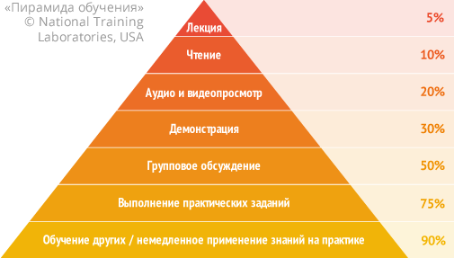

Чем эти курсы отличаются от других?
В интернет есть много различных курсов, но, к сожалению, большинство из них не выдерживают никакой критики. Скорее всего, вы и сами понимаете это, а если нет – спросите знакомого специалиста, он подтвердит.
Курсы, которые находятся здесь — эффективны и не похожи ни на один из них.
- Цель — полноценная профессиональная разработка. Курс идёт с расчетом на современную разработку уровня мировых стандартов. Это немного другой уровень, чем «кнопка на коленке», и другой подход к знаниям. Понятно, что «гуру» шлифуют мастерство годами, но мы можем достаточно сильно продвинуться и научиться грамотной разработке за время курса. Для участников «с нуля» существует вводный видеокурс, который позволяет освоить самые базовые моменты заранее.
- Курс построен на примерах и задачах. Программировать — это как плавать, одной теории маловато, нужна практика, и чем больше — тем лучше. Значит – много примеров и задач. Ведь умение их решать, основанное на понимании и прямых руках — и есть реальная цель.
- Правильное понимание языка. JavaScript — особенный язык. Если взять все часы «среднего» JavaScript-разработчика, потерянные на вопросы на форумах, на отладку кривого кода… То важность этого становится очевидной.
- Актуальность… То, как делаются современные проекты, а не как это было 5 лет назад.
- Качество кода — это важно, т.к. большинство времени тратится не на изначальное написание кода, а на его развитие и поддержку. На курсах ему уделяется особое внимание.
- Непрерывная обратная связь — на любые вопросы вы получаете ответы, на ваши решения — грамотный ответ, можно ли так писать и когда возможны проблемы.
Курсы возникли в результате долгого опыта разработки и преподавания, очного, заочного и совмещенного, и сочетают преимущества обоих технологий.
- У вас на руках будут лекционные материалы для изучения и выполнения заданий.
- Ваши вопросы, результаты выполнения заданий, способы сделать лучше и правильнее мы обсуждаем при видео-общении онлайн.
Зачем курсы, когда есть книги и статьи на javascript.ru?
Практика показывает, что язык программирования, как и обычные языки, все же лучше изучаются на курсах.
JavaScript в этом смысле особенный язык. На нём очень легко начать что-то делать. Но при этом разница между человеком, который нахватался по верхам и профессионалом, постигшим JS-дзен — колоссальна. Один делает три кнопки, другой пишет Gmail и покоряет мир.
Цель курсов — упростить и спрямить вторую дорогу, и пройтись по ее началу вместе, чтобы не свернуть ненароком куда не следует. А уж что вы потом захотите делать — новый Gmail или меню на сайте — вам решать. Главное это скорость и качество разработки.
Курсы JavaScript — мощный и быстрый способ обучения. При полноценном участии они гарантируют актуальные, глубокие знания.
Наша цель — не просто выучить, какие есть функции. Да, методы знать нужно, но главное — уметь «думать на javascript» и разрабатывать понятный, хороший код, без ошибок и с правильной структурой.
Возможность участников общаться онлайн друг с другом и с ведущим, выполнение заданий также даёт более глубокое и эффективное усвоение практических навыков.
Ниже находится классическая «пирамида обучения». Слева указаны полученные в результате исследований средние проценты усвоения знаний. Четыре верхние ступени относятся к индивидуальному обучению. Три нижние — к групповому и, в частности, курсам.

На текущий момент в курсах уже участвовало более 2000 человек. Могло бы быть гораздо больше, но моя цель — не количество, а качество.
Все участники как и вы, имеют доступ к гугл, книгам и javascript.ru. Но каждый имеет право на лучшее, они выбрали поход на курсы и, похоже, не пожалели.
Курсы — это вложение в себя. Это усилия, которые позволят быстро продвинуться. А где вы хотите быть через несколько месяцев/лет?
Может быть, имеет смысл level up?
Зачем курсы, если можно научиться на работе?
Забавный совет, который дают многим начинающим, такой: «читай книги, иди работай, пиши скрипты и научишься». Он отчасти правилен — действительно, нужно разрабатывать, получать опыт.
Но вот что касается «научиться» — на практике все не так просто. Люди могут работать долго, но качество кода при этом не всегда растёт.
Это и видно, мы все знаем, что компаниям нужны результаты. Им нужны хорошие разработчики, очень нужны. В современном интернет всё решают люди. За них постоянно идет борьба. На поиск выделяются ресурсы, деньги...
Если бы люди быстро вырастали в процессе работы — не было бы огромных трат ресурсов на поиск разработчиков.
Для компании обучать людей самостоятельно — гораздо затратнее, чем брать уже учёных. Поэтому предпочитают заплатить хорошему разработчику побольше, чем самостоятельно «допиливать» среднего.
Всё это объективные реалии, которые можно наблюдать в мире. Именно поэтому существуют курсы. Хорошие курсы могут дать очень многое, если, конечно, это — действительно хорошие курсы.


Комментарии
<code>, для нескольких строк кода — тег<pre>, если больше 10 строк — ссылку на песочницу (plnkr, JSBin, codepen…)